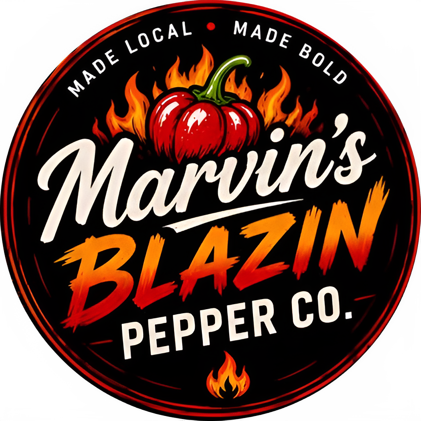
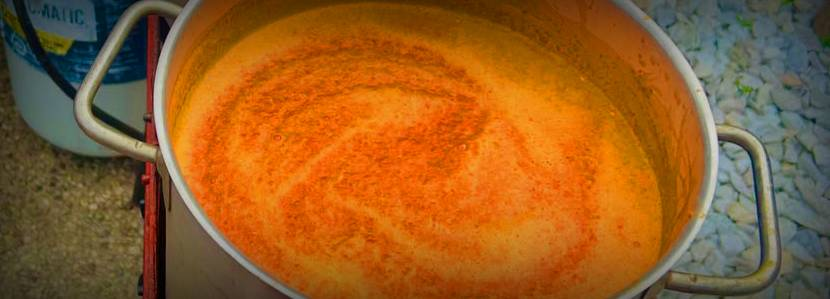
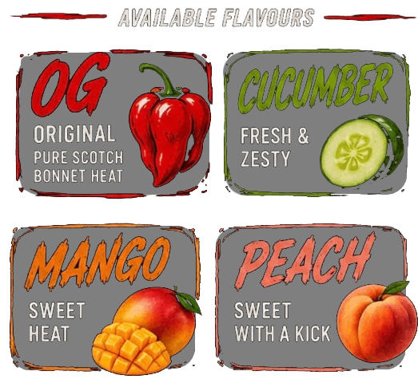
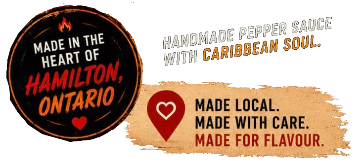

Why we cook our pepper sauce: the secret to bold flavor, smooth texture, & lasting freshness!
Builds Flavour Brings all the fresh peppers, garlic, & veggies together for a deeper, richer Caribbean taste.
Tames Raw Heat Balances the fire so you get bold, delicious heat; not just raw spice.
Natural Preservation Helps reduce harmful bacteria, so the sauce stays fresh longer without artificial preservatives.

Smooth, Perfect Texture Softens the peppers and blends everything into a smooth, consistent sauce that you can enjoy on anything.
Safer & More Enjoyable Creates flavourful, ready-to-eat sauce that is easy on the stomach and packed with real taste.
The heart behind Marvin's Blazin' Pepper Co.
For Marvin, great pepper sauce is more than just heat—it is family, tradition, and a lifetime of passion.
Growing up with Caribbean roots, he watched his father make fresh, homemade pepper sauce using recipes and techniques passed down through generations. Those early memories sparked a lifelong appreciation for authentic Caribbean flavour.
Marvin’s love for cooking began at just 14 years old when he started working at Wendy’s. By 17, he had worked his way up to management. At 25, he fulfilled a lifelong dream by opening his first Caribbean restaurant, where he thrived as a chef and shared his passion for bold, authentic food with the community.
As family became the priority, life took him in a different direction, but his passion for creating unforgettable flavours never faded.
Today, Marvin is bringing that passion back to the kitchen with Marvin’s Blazin’ Hot Sauce—handcrafted pepper sauces inspired by his father’s Caribbean traditions, made with fresh ingredients, bold flavour, and just the right amount of fire. Proudly made local in the heart of Hamilton, every bottle is a tribute to family, heritage, and the belief that great food brings people together.
Message us on social media to place an order!

